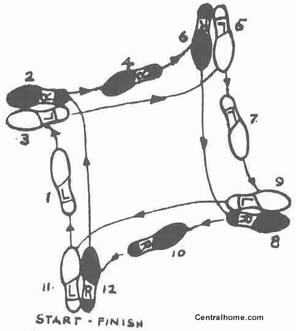

dancing toekeyboard
----dancing toekeyboard
----toekeyboard dancing
----dance dance revolution
----ddr for the mobile phone
https://en.wikipedia.org/wiki/Dance_pad
https://en.wikipedia.org/wiki/Power_Pad
https://en.wikipedia.org/wiki/Comparison_of_dance_pad_video_games
https://en.wikipedia.org/wiki/Dance_Praise
https://en.wikipedia.org/wiki/Dance_Dance_Revolution_S
https://en.wikipedia.org/wiki/Dance_Dance_Revolution
https://en.wikipedia.org/wiki/Dance_Dance_Revolution_Hottest_Party
-use mobile phone gyroscope to gauge orientation of individual
https://en.wikipedia.org/wiki/List_of_dances
international ballroom: waltz, foxtrot, quickstep, viennesse waltz
international latin: cha cha, rumba, tango, jive
salsa, merengue
hip hop
swing, lindy hop https://en.wikipedia.org/wiki/Lindy_Hop
ballet
tap dancing
https://duckduckgo.com/?q=waltz+step+patterns&t=ffab&iax=1&ia=images
https://duckduckgo.com/?q=tango+step+patterns&t=ffab&iax=1&ia=images
https://duckduckgo.com/?q=ballet+step+patterns&t=ffab&iar=images&iax=1&ia=images
https://duckduckgo.com/?q=ballet+step+patterns&t=ffab&iar=images&iax=1&ia=images&iai=http%3A%2F%2Fwww.stepsontoes.com%2Fwp-content%2Fuploads%2FDanceSteps.jpg
